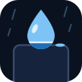
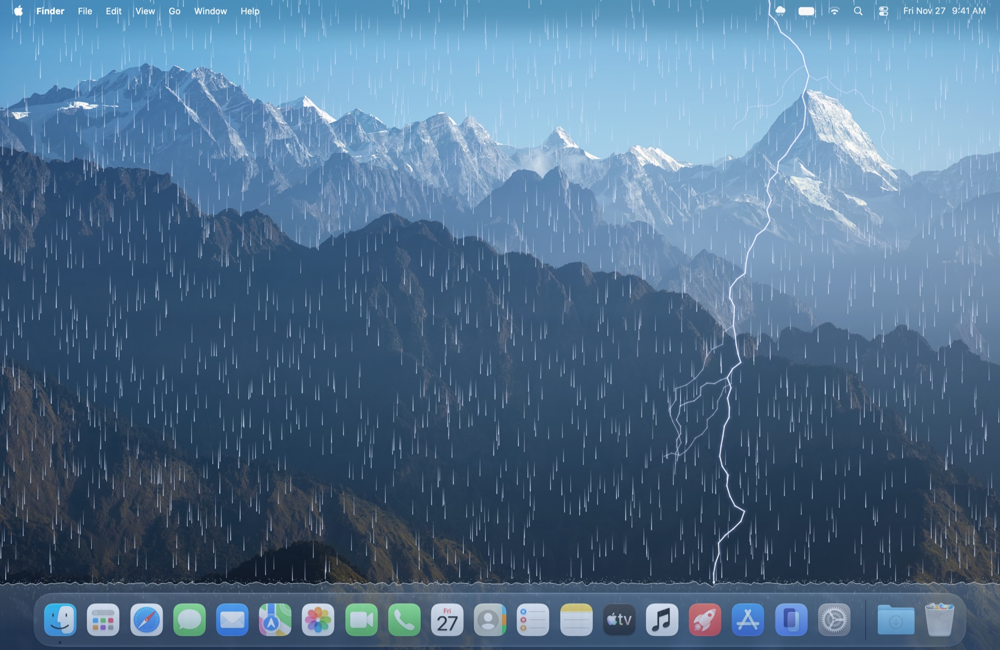
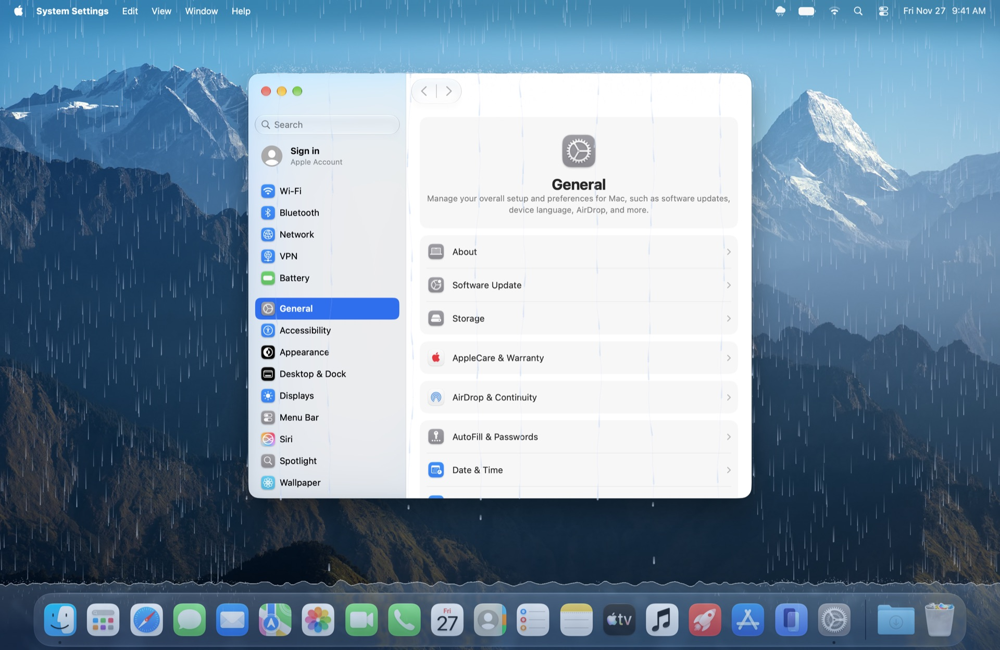

Knows your windows
Drops hit the top edges of your windows, bead up and run off the corners.

Rain for your Mac. It beads up on window edges, trickles down and pools at the bottom of your screen.
Lightweight. Open source. Lives in your menu bar.
Requires macOS 14 Sonoma or later · Apple Silicon · Version 1.0

Drops hit the top edges of your windows, bead up and run off the corners.
A rippling pool rises along the bottom of the screen, right over the Dock.
Rain, wind and thunder are synthesized as you listen. Nothing is a recording.
Lightning strikes now and then. Five wind levels push the rain around.
Drawn with Metal. Pauses while your Mac is locked or asleep.
Free, with all of the code on GitHub.

Every sound in Raindrops is synthesized live on your Mac. These loops were recorded straight from the app.
Thunder rolls in now and then during Rain and Downpour.
Click the drop in your menu bar to start or stop the rain and choose how hard it falls. Wind, the pool and sound are in Settings.
Requires macOS 14 Sonoma or later · Apple Silicon